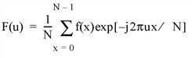
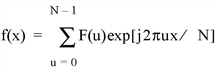
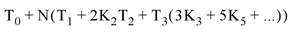

The FFT function returns a result e qual to the complex, discrete F ourier transform of Array . The result of this function is a single- or double-precision complex array.
FFT uses a multivariate complex Fourier transform, computed in place with a mixed-radix Fast Fourier Transform algorithm.
The FFT function uses original Fortran code authored by:
RC Singleton, Stanford Research Institute, September 1968
NIST Guide to Available Math Software
Source for module FFT from package GO.
This code was retrieved from NETLIB on Wednesday, July 5, 1995, at 11:50:07.
This code was translated by f2c (version 19950721) and modified to resemble C by:
MJ Olesen, Queen's University at Kingston, 1995-97
This code was retrieved by Chris Torrence from NETLIB ( http://www.netlib.org/go/ ) in January 2000. A significant portion (approximately one-third) of the code has been rewritten or extended for the FFT function.
The discrete Fourier transform, F ( u ), of an N -element, one-dimensional function, f ( x ), is defined as:

And the inverse transform, ( Direction > 0), is defined as:

If the keyword OVERWRITE is set, the transform is performed in-place, and the result overwrites the original contents of the array.
See Fast Fourier Transform Background for more information on how FFT is used to reduce background noise in imagery.
The following code plots the logarithm of the power spectrum of a 100-element index array:
p = PLOT(ABS(FFT(FINDGEN(100), -1)), /YLOG)
See Additional Examples and Fast Fourier Transform for more code examples using the FFT function.
For a one-dimensional FFT, running time is roughly proportional to the total number of points in Array times the sum of its prime factors. Let N be the total number of elements in Array , and decompose N into its prime factors:
Running time is proportional to:

where T 3 ~ 4T 2 . For example, the running time of a 263 point FFT is approximately 10 times longer than that of a 264 point FFT, even though there are fewer points. The sum of the prime factors of 263 is 264 (1 + 263), while the sum of the prime factors of 264 is 20 (2 + 2 + 2 + 3 + 11).
Result = FFT( Array [, Direction ] [, / CENTER ] [, DIMENSION = scalar ] [, / DOUBLE ] [, / INVERSE ] [, / OVERWRITE ] )
FFT returns a complex array that has the same dimensions as the input array. The output array is ordered in the same manner as almost all discrete Fourier transforms. Element 0 contains the zero frequency component, F 0 . The array element F 1 contains the smallest, nonzero positive frequency, which is equal to 1/(N i T i ), where N i is the number of elements and T i is the sampling interval of the i th dimension. F 2 corresponds to a frequency of 2/(N i T i ). Negative frequencies are stored in the reverse order of positive frequencies, ranging from the highest to lowest negative frequencies.
Note: The FFT function can be performed on functions of up to eight (8) dimensions. If a function has n dimensions, IDL performs a transform in each dimension separately, starting with the first dimension and progressing sequentially to dimension n . For example, if the function has two dimensions, IDL first does the FFT row by row, and then column by column.
For an even number of points in the i th dimension, the frequencies corresponding to the returned complex values are:
0, 1/(N i T i ), 2/(N i T i ), ..., (N i /2-1)/(N i T i ), 1/(2T i ), -(N i /2-1)/(N i T i ), ..., -1/(N i T i )
where 1/(2T i ) is the Nyquist critical frequency.
For an odd number of points in the i th dimension, the frequencies corresponding to the returned complex values are:
0, 1/(N i T i ), 2/(N i T i ), ..., (N i /2-0.5)/(N i T i ), -(N i /2-0.5)/(N i T i ), ..., -1/(N i T i )
In IDL code, these frequencies may be computed as follows:
; N is an integer giving the number of elements in a particular dimension
; T is a floating-point number giving the sampling interval
X = (FINDGEN((N - 1)/2) + 1)
is_N_even = (N MOD 2) EQ 0
if (is_N_even) then $
freq = [0.0, X, N/2, -N/2 + X]/(N*T) $
else $
freq = [0.0, X, -(N/2 + 1) + X]/(N*T)
The array to which the Fast Fourier Transform should be applied. If Array is not of complex type, it is converted to complex type. The dimensions of the result are identical to those of Array . The size of each dimension may be any integer value and does not necessarily have to be an integer power of 2, although powers of 2 are certainly the most efficient.
Direction is a scalar indicating the direction of the transform, which is negative by convention for the forward transform, and positive for the inverse transform. If Direction is not specified, the forward transform is performed.
A normalization factor of 1/ N , where N is the number of points, is applied during the forward transform.
Note: When transforming from a real vector to complex and back, it is slightly faster to set Direction to 1 in the real to complex FFT.
Note also that the value of Direction is ignored if the INVERSE keyword is set.
Set this keyword to shift the zero-frequency component to the center of the spectrum. In the forward direction, the resulting Fourier transform has the zero-frequency component shifted to the center of the array. In the reverse direction, the input is assumed to be a centered Fourier transform, and the coefficients are shifted back before performing the inverse transform.
Note: For an odd number of points the zero-frequency component will be in the center. For an even number of points the first element will correspond to the Nyquist frequency component, followed by the remaining frequency components - the zero-frequency component will then be in the center of the remaining components.
Set this keyword to a scalar indicating the dimension across which to calculate the FFT. If this keyword is not present or is zero, then the FFT is computed across all dimensions of the input array. If this keyword is present, then the FFT is only calculated only across a single dimension. For example, if the dimensions of Array are N1, N2, N3, and DIMENSION is 2, the FFT is calculated only across the second dimension.
Set this keyword to a value other than zero to force the computation to be done in double-precision arithmetic, and to give a result of double-precision complex type. If DOUBLE is set equal to zero, computation is done in single-precision arithmetic and the result is single-precision complex. If DOUBLE is not specified, the data type of the result will match the data type of Array .
Set this keyword to perform an inverse transform. Setting this keyword is equivalent to setting the Direction argument to a positive value. Note, however, that setting INVERSE results in an inverse transform even if Direction is specified as negative.
If this keyword is set, and the Array parameter is a variable of complex type, the transform is done “in-place”. The result overwrites the previous contents of the variable.
For example, to perform a forward, in-place FFT on the variable a:
a = FFT(a, -1, /OVERWRITE)
This routine is written to make use of IDL’s thread pool , which can increase execution speed on systems with multiple CPUs. The values stored in the !CPU system variable control whether IDL uses the thread pool for a given computation. In addition, you can use the thread pool keywords TPOOL_MAX_ELTS, TPOOL_MIN_ELTS, and TPOOL_NOTHREAD to override the defaults established by !CPU for a single invocation of this routine. See Thread Pool Keywords for details.
Note: Specifically, FFT will use the thread pool to overlap the inner loops of the computation when used on data with dimensions which have factors of 2, 3, 4, or 5. The prime-number DFT does not use the thread pool, as doing so would yield a relatively small benefit for the complexity it would introduce. Our experience shows that the improvement in performance from using the thread pool for FFT is highly dependent upon many factors (data length and dimensions, single vs. double precision, operating system, and hardware) and can vary between platforms.
In this example we display the power spectrum of a 100-element vector sampled at a rate of 0.1 seconds per point. The 0 frequency component is displayed at the center of the plot, and frequency is plotted on the x-axis:
; Define the number of points and the interval:
N = 100
T = 0.1
; Midpoint+1 is the most negative frequency subscript:
N21 = N/2 + 1
; The array of subscripts:
F = INDGEN(N)
; Insert negative frequencies in elements F(N/2 +1), ..., F(N-1):
F[N21] = N21 -N + FINDGEN(N21-2)
; Compute T0 frequency:
F = F/(N*T)
; Shift so that the most negative frequency is plotted first:
p = PLOT(SHIFT(F, -N21), SHIFT(ABS(FFT(F, -1)), -N21), /YLOG)
In this example we compute the FFT of two-dimensional images:
; Create a cosine wave damped by an exponential
n = 256
x = FINDGEN(n)
y = COS(x*!PI/6)*EXP(-((x - n/2)/30)^2/2)
; Construct a two-dimensional image of the wave
z = REBIN(y, n, n)
; Add two different rotations to simulate a crystal structure
z = ROT(z, 10) + ROT(z, -45)
LOADCT, 39
p = IMAGE(BYTSCL(z), LAYOUT = [2, 2, 1])
; Compute the two-dimensional FFT
f = FFT(z)
logpower = ALOG10(ABS(f)^2) ; log of Fourier power spectrum
p = IMAGE(BYTSCL(logpower), LAYOUT = [2, 2, 2], /CURRENT)
; Compute the FFT only along the first dimension
f = FFT(z, DIMENSION=1)
logpower = ALOG10(ABS(f)^2) ; log of Fourier power spectrum
p = IMAGE(BYTSCL(logpower), LAYOUT = [2, 2, 3], /CURRENT)
; Compute the FFT only along the second dimension.
f = FFT(z, DIMENSION=2)
logpower = ALOG10(ABS(f)^2) ; log of Fourier power spectrum
p = IMAGE(BYTSCL(logpower), LAYOUT = [2, 2, 4], /CURRENT)
|
Original |
Introduced |
|
7.1 |
Added CENTER keyword |